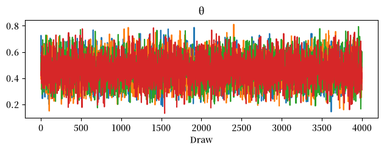
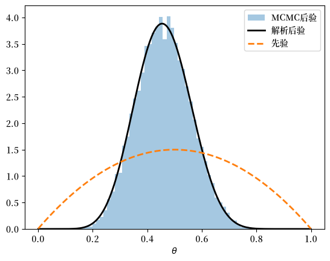
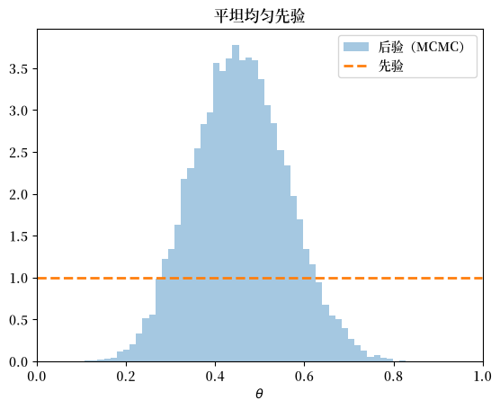
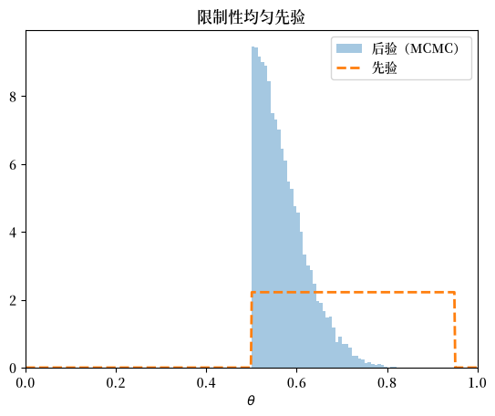
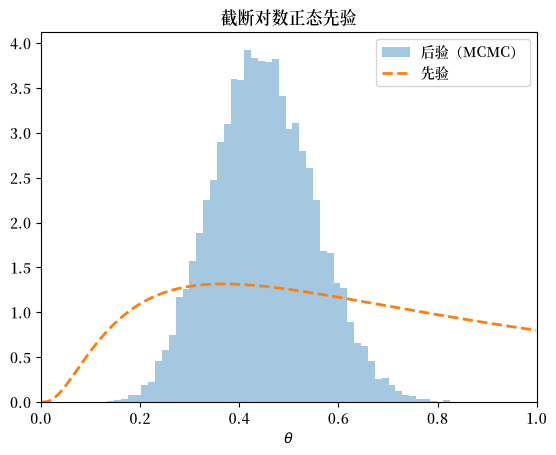
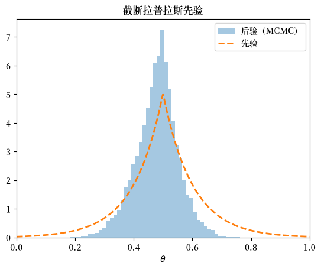
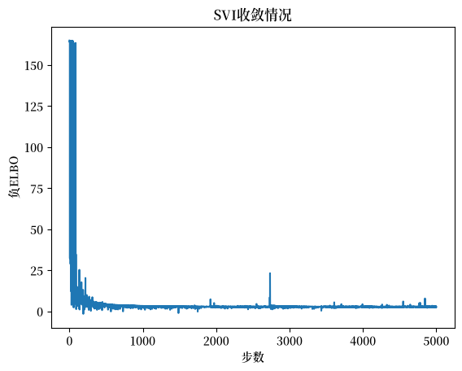
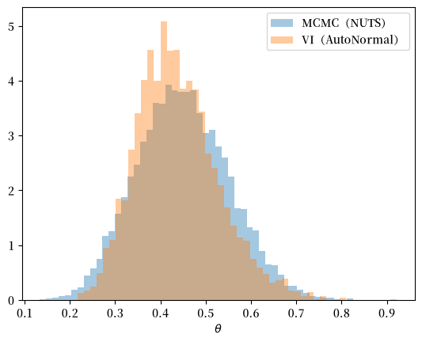

18. 非共轭先验#
GPU
本讲座是在配有GPU的机器上构建的——不过没有GPU也可以运行。
Google Colab 提供带GPU的免费套餐，使用方法如下：
点击右上角的”播放”图标
选择 Colab
将运行时环境设置为包含GPU
除了Anaconda中已有的库之外，本讲座还需要以下库：
!pip install numpyro jax arviz
18.1. 概述#
本讲是概率的两种含义的续篇。
在那节课中，我们对硬币正面朝上的未知概率 \(\theta\) 采用了beta先验分布，并配合二项似然函数。
该先验和似然构成了一对共轭对：应用贝叶斯法则得到的后验分布与先验属于同一分布族——同样是beta分布。
共轭之所以便利，是因为它能给出闭式解的后验分布。
但一个人的先验信念是他或她自己的事情，一般而言未必恰好与似然函数共轭。
当先验和似然不共轭时，后验通常没有闭式解，我们必须对其进行数值近似。
本讲介绍两种被广泛使用的方法，二者都在概率编程库NumPyro中实现：
马尔可夫链蒙特卡洛（MCMC）——构造一个不变分布为后验分布的马尔可夫链，然后从中采样。我们使用No-U-Turn采样器（NUTS），这是哈密顿蒙特卡洛的一种最先进形式。
变分推断（VI）——用优化代替采样：在一族可处理的分布中搜索最接近后验分布的成员。
备注
本讲将NUTS视为一个黑箱。
简言之，它是哈密顿蒙特卡洛的一种形式，而哈密顿蒙特卡洛本身又是Metropolis–Hastings算法的一个版本：它提出候选抽样并接受或拒绝，从而使得到的马尔可夫链以后验分布为其不变分布。
它与基本的Metropolis–Hastings采样器的区别在于，其提议是根据对数后验的梯度（导数）信息构建的，这使得链能够高效地在参数空间中移动；此外NUTS还会自动调节每次提议移动的步长。
关于MCMC和Metropolis–Hastings算法更深入的介绍，参见本讲。
我们的计划是：
确认MCMC能够重现我们可以解析计算的共轭beta后验分布——这可以在一个我们已知答案的问题上验证方法的有效性。
用若干非共轭先验代替beta先验，并用MCMC近似每个后验分布。
引入变分推断，并将其与MCMC进行比较。
让我们先导入一些库。
import numpy as np
import matplotlib.pyplot as plt
import matplotlib as mpl
FONTPATH = "fonts/SourceHanSerifSC-SemiBold.otf"
mpl.font_manager.fontManager.addfont(FONTPATH)
plt.rcParams['font.family'] = ['Source Han Serif SC']
import scipy.stats as st
import jax.numpy as jnp
from jax import random
import numpyro
import numpyro.distributions as dist
from numpyro.infer import MCMC, NUTS, SVI, Trace_ELBO
from numpyro.infer.autoguide import AutoNormal
from numpyro.optim import Adam
import arviz as az
18.2. 抛硬币模型#
如概率的两种含义中所述，硬币以概率 \(\theta\) 正面朝上（\(Y=1\)），以概率 \(1-\theta\) 反面朝上（\(Y=0\)）。
如果我们抛硬币 \(n\) 次，正面朝上的次数 \(k\) 服从二项分布
我们把 \(\theta\) 视为具有先验密度 \(p(\theta)\) 的随机变量，我们想要的是后验分布
18.2.1. 生成数据#
我们模拟一枚硬币的一系列抛掷结果，这枚硬币正面朝上的真实概率（分析者未知）为 \(\theta = 0.4\)。
def simulate_coin_flips(θ=0.4, n=20, seed=1234):
"抛硬币n次；返回由0（反面）和1（正面）组成的数组。"
rng = np.random.default_rng(seed)
return (rng.random(n) < θ).astype(int)
data = simulate_coin_flips()
k, n = int(data.sum()), len(data)
k, n
(9, 20)
我们特意使用了一个小样本（\(n = 20\)）。
原因是先验分布的影响在数据稀少时最为显著。
当样本量很大时，似然函数占主导地位，几乎任何合理的先验都会导致相同的后验分布——这正是我们在概率的两种含义中看到的那种集中现象。
适度的 \(n\) 能保持先验的影响可见，这正是我们在此想要研究的。
18.2.2. 在NumPyro中设定模型#
对大多数读者来说，这将是第一次接触NumPyro，其风格需要一些时间来适应。
要使用它，我们把概率模型描述为一个Python函数——NumPyro有点令人困惑地把它称为模型（model）。
这样的函数在被调用时不会计算任何东西，也不会返回后验分布。
相反，它是对数据生成过程的一种声明：哪些量是随机的，它们服从什么分布，以及数据如何依赖于它们。
一个推断算法——比如下面的NUTS采样器——随后会读取这个声明，并为我们求出后验分布。
在模型内部，每个随机量都通过调用numpyro.sample来引入，关键字obs决定了它的角色：
numpyro.sample("θ", prior)引入一个名为"θ"的潜在（未观测）变量，从prior中抽取——这是我们希望推断的量。numpyro.sample("k", dist.Binomial(n, θ), obs=k)引入一个观测变量：关键字obs=k将其固定为数据，这正是似然函数 \(p(k \mid \theta)\) 进入模型的方式。
字符串名称（"θ"和"k"）是NumPyro用来跟踪这些变量的标签；我们稍后会用它们把后验抽样结果取出来。
我们只写一个模型，把先验分布作为参数传入，这样对于我们考虑的每一个先验——无论是否共轭——都可以原样复用它。
def binomial_model(prior, k, n):
"带有调用者提供的θ先验的二项似然。"
θ = numpyro.sample("θ", prior)
numpyro.sample("k", dist.Binomial(n, θ), obs=k)
注意binomial_model不返回任何东西，而且我们从不自己调用它。
相反，我们把它交给一个推断算法，由算法提供参数并追踪这两条sample语句，从而组装出后验分布。
我们还编写一个小的辅助函数，用来在给定模型上运行NUTS并返回拟合好的采样器。
我们请求四条链，以便在下面检验收敛性，并用chain_method="vectorized"运行它们，这会在单个设备上同时评估所有链——因此同样的代码在CPU或GPU上都能不加修改地运行。
def run_nuts(model, *args, seed=0, num_warmup=1000, num_samples=4000, num_chains=4):
"用NUTS采样器对一个NumPyro模型进行采样。"
mcmc = MCMC(
NUTS(model),
num_warmup=num_warmup,
num_samples=num_samples,
num_chains=num_chains,
chain_method="vectorized",
progress_bar=False,
)
mcmc.run(random.key(seed), *args)
return mcmc
NumPyro建立在JAX之上，而JAX显式地处理随机性：它不依赖全局随机状态，而是要求每次运行都拥有自己的PRNG密钥，这里通过random.key(seed)创建。
（这就是为什么我们在上面用NumPy的生成器来生成数据，而在这里使用JAX密钥的原因。）
run_nuts特意写得很通用：它对我们传入的任何模型进行采样，并通过mcmc.run把额外的参数（*args）转发给那个模型。我们始终以run_nuts(binomial_model, prior, k, n)的形式调用它，这样prior、k和n就会原样传递给binomial_model——自始至终只有这一个先验。
18.3. MCMC重现共轭后验#
在把MCMC用于困难问题之前，让我们先在一个简单问题上检验它。
对于\(\text{Beta}(\alpha_0, \beta_0)\)先验，后验分布可以解析求出（参见概率的两种含义）：
我们取 \(\alpha_0 = \beta_0 = 2\)，并用NUTS对后验进行采样。
α0, β0 = 2.0, 2.0
mcmc = run_nuts(binomial_model, dist.Beta(α0, β0), k, n)
在查看后验之前，我们应当检查采样器是否已经完成了它的任务。
与我们习惯的独立抽样不同，MCMC返回的是一个依赖序列——一条马尔可夫链——其早期的抽样仍然记得链的起点。
只有当链已经”遗忘”其起点、并沉降到其不变分布——按构造正是我们想要的后验分布——之后，我们才能信任其输出。
作为一种保障，我们从不同的随机起点运行了四条链（run_nuts中的num_chains=4），现在检验它们是否彼此一致。
ArviZ是一个用于检验贝叶斯采样器输出的配套库。
函数az.from_numpyro把我们的NumPyro结果重新打包为ArviZ的标准数据结构，az.summary则打印出每个参数的汇总统计和收敛性诊断表。
idata = az.from_numpyro(mcmc)
az.summary(idata, var_names=["θ"])
| mean | sd | eti89_lb | eti89_ub | ess_bulk | ess_tail | r_hat | mcse_mean | mcse_sd | |
|---|---|---|---|---|---|---|---|---|---|
| θ | 0.46 | 0.099 | 0.3 | 0.62 | 5766 | 7730 | 1.00 | 0.0013 | 0.00088 |
这张表中有两列是值得理解的收敛性诊断指标。
r_hat（Gelman–Rubin统计量）比较每条链内部的抽样离散程度与各条链之间的离散程度。如果所有链都已经收敛到同一分布，这两者应当相符，r_hat接近\(1.0\)；若数值超过大约\(1.01\)，则说明各链彼此不一致，抽样结果尚不可信。**
ess_bulk和ess_tail**报告有效样本量。由于连续的MCMC抽样是相关的，一条长度为\(N\)的链所携带的信息少于\(N\)个独立抽样所能携带的信息；有效样本量估计的是它相当于多少个独立抽样（分别在分布的主体部分和尾部）。数值越大越好。
这里r_hat基本上是\(1.0\)，有效样本量达到数千，说明各条链的混合情况良好。
**迹图（trace plot）**给出了同一事实的直观检验。
ArviZ的plot_trace为每个参数绘制两个面板：右侧是抽样值随迭代次数的变化（每条链一种颜色的线）；左侧是各条链抽样的密度估计。
混合良好的链在右侧看起来像平稳噪声——一条模糊而扁平的带状区域，各条链彼此重叠而非漂移或游走——它们在左侧的密度曲线几乎完全重合。
az.plot_trace(idata, var_names=["θ"])
plt.tight_layout()
plt.show()
findfont: Failed to find font weight normal, now using 600.
findfont: Failed to find font weight normal, now using 600.

我们的链通过了这两项检验，因此可以信任这些抽样结果，转而来看后验分布本身。
现在我们把MCMC后验与解析beta后验进行比较。
θ_grid = np.linspace(0.001, 0.999, 500)
samples = np.asarray(mcmc.get_samples()["θ"])
fig, ax = plt.subplots()
ax.hist(samples, bins=50, density=True, alpha=0.4,
label="MCMC后验")
ax.plot(θ_grid, st.beta(α0 + k, β0 + n - k).pdf(θ_grid),
'k-', lw=2, label="解析后验")
ax.plot(θ_grid, st.beta(α0, β0).pdf(θ_grid),
'C1--', lw=2, label="先验")
ax.set_xlabel(r"$\theta$")
ax.legend()
plt.show()
findfont: Failed to find font weight normal, now using 600.

MCMC抽样的直方图恰好落在解析后验密度之上。
采样器行之有效，因此我们可以在没有闭式解后验的先验上依赖它。
18.4. 非共轭先验#
我们现在保持二项似然和同样的数据不变，但把beta先验替换为与之不共轭的先验。
对每一个先验，配方都是一样的：
描述该先验，并将其构建为一个NumPyro分布，
把它传入
binomial_model并运行NUTS，把先验和得到的后验画在一起。
下面这个辅助函数在同一坐标轴上画出先验密度和后验抽样。
def plot_prior_posterior(prior, samples, title=""):
"在[0, 1]上叠加绘制θ的先验密度和后验MCMC抽样。"
grid = jnp.linspace(0.001, 0.999, 500)
# 将密度限制在先验的支撑范围内：dist.Uniform.log_prob
# 即使在[low, high]之外也会返回其常数值
in_support = np.asarray(prior.support(grid))
prior_pdf = np.where(in_support, np.exp(np.asarray(prior.log_prob(grid))), 0.0)
fig, ax = plt.subplots()
ax.hist(np.asarray(samples), bins=50, density=True, alpha=0.4,
label="后验（MCMC）")
ax.plot(np.asarray(grid), prior_pdf, 'C1--', lw=2, label="先验")
ax.set_xlabel(r"$\theta$")
ax.set_xlim(0, 1)
ax.legend()
if title:
ax.set_title(title)
plt.show()
18.4.1. 均匀先验#
最简单的非共轭先验是均匀先验：分析者认为某个区间内\(\theta\)的每个取值都同等可能。
在整个\([0, 1]\)区间上取均匀先验表示无差异态度。
由于其密度为常数，此时后验分布仅与似然函数成正比。
mcmc_flat = run_nuts(binomial_model, dist.Uniform(0.0, 1.0), k, n)
plot_prior_posterior(dist.Uniform(0.0, 1.0),
mcmc_flat.get_samples()["θ"],
title="平坦均匀先验")

后验分布集中在样本频率 \(k/n\) 附近，正如似然函数所显示的那样。
现在假设分析者反而确信这枚硬币偏向正面，于是在\([0.5, 0.95]\)上取均匀先验。
这个先验对真实值\(\theta = 0.4\)附近的区域赋予了零密度。
mcmc_restr = run_nuts(binomial_model, dist.Uniform(0.5, 0.95), k, n)
plot_prior_posterior(dist.Uniform(0.5, 0.95),
mcmc_restr.get_samples()["θ"],
title="限制性均匀先验")

后验分布无法在先验为零的地方分配概率质量，因此它堆积在下边界\(0.5\)附近——尽可能靠近先验所允许的数据方向。
这是一个生动的警示：一个排除了真相的先验，无论收集多少数据都永远无法被推翻。
18.4.2. 截断对数正态先验#
均匀先验是平坦的。更现实的先验则是光滑且不对称的。
在\([0, 1]\)上一个方便的选择是截断对数正态分布：取\(Z \sim N(\mu, \sigma)\)并截断到\(Z \le 0\)，令\(\theta = e^{Z}\)，这样它就落在\((0, 1]\)内。
NumPyro通过让TruncatedNormal经过ExpTransform来构造这个分布。
def truncated_lognormal(μ, σ):
"截断到单位区间(0, 1]的对数正态分布。"
base = dist.TruncatedNormal(loc=μ, scale=σ, low=-jnp.inf, high=0.0)
return dist.TransformedDistribution(base, dist.transforms.ExpTransform())
prior_ln = truncated_lognormal(0.0, 1.0)
mcmc_ln = run_nuts(binomial_model, prior_ln, k, n)
plot_prior_posterior(prior_ln, mcmc_ln.get_samples()["θ"],
title="截断对数正态先验")

该先验偏好较小的\(\theta\)值，但由于\(\sigma = 1\)使其相当发散，似然函数把后验拉向样本频率。
我们保留mcmc_ln——下面将把它与变分推断进行比较。
18.4.3. 截断拉普拉斯先验#
我们最后一个先验有一个尖锐的、非光滑的峰值。
拉普拉斯密度 \(\propto e^{-|\theta - \mu| / b}\) 在其中心\(\mu\)处有一个拐点，表示一种强烈的信念：\(\theta\)位于\(\mu\)附近，同时仍允许尾部出现意外。
我们把它截断到\([0, 1]\)上，并以\(0.5\)为中心。
def truncated_laplace(μ, b):
"截断到单位区间[0, 1]的拉普拉斯分布。"
return dist.TruncatedDistribution(dist.Laplace(μ, b), low=0.0, high=1.0)
prior_lp = truncated_laplace(0.5, 0.1)
mcmc_lp = run_nuts(binomial_model, prior_lp, k, n)
plot_prior_posterior(prior_lp, mcmc_lp.get_samples()["θ"],
title="截断拉普拉斯先验")

这个带尖峰的先验把后验拉向\(0.5\)，偏离了接近\(0.4\)的样本频率。
这里的拉力比较温和，因为先验虽然有峰值，但并不十分陡峭；如果\(b\)更小，它就会主导这个规模不大的样本。
NUTS无需任何特殊调节即可处理先验中的这个拐点——这是基于梯度的采样器搭配自动微分的一个实际优势。
18.5. 变分推断#
MCMC通过从后验中采样来近似后验。
**变分推断（VI）**采取了不同的路径：它把后验近似转化为一个优化问题。
我们把注意力限制在一族可处理的密度 \(q_\phi(\theta)\)——引导分布（guide）——上，它由参数\(\phi\)索引，我们搜索该族中最接近后验的成员。
18.5.1. 为什么要用变分推断？#
如果NUTS已经能返回精确的后验，为什么还要引入另一种方法？
答案是规模。
MCMC在每一步都要在整个数据集上评估似然函数，而且它所需要的步数往往随参数的维度增长。
对于大型数据集或高维模型——例如机器学习中常见的层级模型和神经网络——这可能会慢到不切实际的程度。
变分推断的伸缩性要好得多，因为其目标函数（下面将介绍的ELBO）可以用在小型随机数据子集上计算的随机梯度来最大化——这与训练深度学习模型所用的机制相同。
它还能给出一个紧凑的参数化近似，事后存储和抽样的成本都很低。
代价是精度：VI只能返回引导分布族内的最佳拟合，并且可能低估不确定性。
一个经验法则是：当你需要精确的后验且问题规模小到可以承受时，优先选择MCMC；当模型对MCMC来说太大，或者一个快速的近似答案已经足够好时，选择VI。
18.5.2. 证据下界#
设先验为\(p(\theta)\)，似然为\(p(Y \mid \theta)\)，其中\(Y\)表示观测数据（这里是正面次数\(k\)）。
根据贝叶斯法则，
其中
(18.1)中的积分是麻烦所在：在非共轭情形下它没有闭式解。
我们用Kullback–Leibler（KL）散度来度量引导分布\(q_\phi(\theta)\)与后验分布之间的差异
并选择\(\phi\)使其最小化。
KL散度仍然涉及难以处理的后验分布，但我们可以对其进行重新整理。利用\(p(\theta \mid Y) = p(\theta, Y) / p(Y)\)，
其中最后一行用到了\(\int q_\phi(\theta)\, d\theta = 1\)。整理后得到，
左边的边际似然\(\log p(Y)\)不依赖于\(\phi\)。
因此最小化KL散度等价于最大化第二项，即证据下界（ELBO）：
由于\(D_{KL} \ge 0\)，ELBO是\(\log p(Y)\)的一个下界——这也是其名称的由来。
关键在于，(18.2)只涉及联合密度 \(p(\theta, Y) = p(Y \mid \theta)\, p(\theta)\)，这是我们可以计算的，而不涉及难以处理的归一化常数\(p(Y)\)。
这个期望可以通过从\(q_\phi\)中采样来估计，而\(\phi\)可以通过梯度上升来改进——这就是随机变分推断（SVI）。
18.5.3. 在NumPyro中实现SVI#
我们需要一个引导分布\(q_\phi\)。
最简单的选择是自动引导（autoguide）：NumPyro检查模型并自动为我们构建一个引导分布。
AutoNormal在每个潜在变量上放置一个独立的正态分布，并经过变换以满足其支撑范围——这里是为了把\(\theta\)保持在\((0, 1)\)内。
我们把SVI应用到上面的截断对数正态模型上，并用Adam优化器最大化ELBO。
guide = AutoNormal(binomial_model)
optimizer = Adam(step_size=0.01)
svi = SVI(binomial_model, guide, optimizer, loss=Trace_ELBO())
svi_result = svi.run(random.key(0), 5000, prior_ln, k, n, progress_bar=False)
SVI最大化ELBO；等价地，它最小化其负值，即所报告的损失。
一条趋于平坦的损失曲线表明已经收敛。
fig, ax = plt.subplots()
ax.plot(svi_result.losses)
ax.set_xlabel("步数")
ax.set_ylabel("负ELBO")
ax.set_title("SVI收敛情况")
plt.show()

18.5.4. 将VI与MCMC进行比较#
为了评估这一近似，我们从拟合好的引导分布中抽样，并将其与同一（对数正态先验）模型的NUTS后验进行比较。
vi_samples = guide.sample_posterior(
random.key(1), svi_result.params, sample_shape=(4000,)
)["θ"]
nuts_samples = mcmc_ln.get_samples()["θ"]
fig, ax = plt.subplots()
ax.hist(np.asarray(nuts_samples), bins=50, density=True, alpha=0.4,
label="MCMC（NUTS）")
ax.hist(np.asarray(vi_samples), bins=50, density=True, alpha=0.4,
label="VI（AutoNormal）")
ax.set_xlabel(r"$\theta$")
ax.legend()
plt.show()

两种近似在后验分布的位置和离散程度上大致一致。
它们不必完全一致。
MCMC对真实后验进行采样（存在蒙特卡洛误差），而VI给出的是其引导分布族内的最佳拟合。
平均场正态引导分布在变换后的尺度上是对称的，可能会漏掉真实后验中的偏度或重尾。
这是成本与精度之间的权衡：VI用优化代替采样，在高维情形下往往快得多，但其近似质量的上限取决于引导分布的灵活性。
18.6. 接下来的方向#
本讲展示了当先验和似然不共轭时，如何利用NumPyro中的NUTS和随机变分推断来计算后验分布。
同样的工具也可以用于更丰富的模型。
AR(1)参数的后验分布和预测 AR(1) 过程两讲将NumPyro应用于自回归时间序列的贝叶斯估计和预测，其中参数是一个向量，无法进行共轭分析。